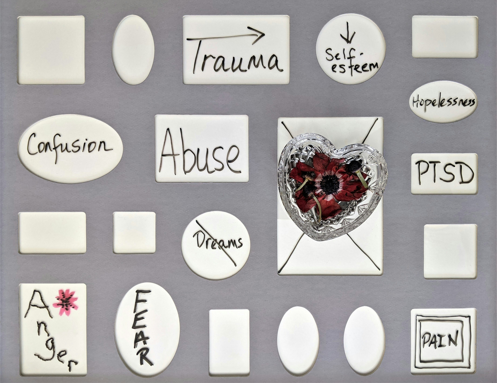

Post-Traumatic Stress Disorder (PTSD)
Introduction:
Post-Traumatic Stress Disorder (PTSD) is a mental health condition triggered by experiencing or witnessing a terrifying event. People with PTSD may experience flashbacks, nightmares, severe anxiety, and uncontrollable thoughts about the event. PTSD can interfere with daily life, making it hard to function and relate to others.

Symptoms:
PTSD symptoms can vary from person to person. They commonly include:
- Intrusive Memories:
- Recurrent, unwanted distressing memories of the traumatic event.
- Reliving the traumatic event as if it were happening again (flashbacks).
- Upsetting dreams or nightmares about the traumatic event.
- Severe emotional distress or physical reactions to something that reminds you of the traumatic event.
- Avoidance:
- Trying to avoid thinking or talking about the traumatic event.
- Avoiding places, activities, or people that remind you of the traumatic event.
- Negative Changes in Thinking and Mood:
- Negative thoughts about yourself, other people, or the world.
- Hopelessness about the future.
- Memory problems, including not remembering important aspects of the traumatic event.
- Difficulty maintaining close relationships.
- Feeling detached from family and friends.
- Lack of interest in activities you once enjoyed.
- Changes in Physical and Emotional Reactions:
- Being easily startled or frightened.
- Always being on guard for danger.
- Self-destructive behavior, such as drinking too much or driving too fast.
- Trouble sleeping.
- Trouble concentrating.
- Irritability, angry outbursts, or aggressive behavior.
- Overwhelming guilt or shame.
Tips to Manage PTSD:
- Seek Professional Help:
- If you suspect you have PTSD, talk to a mental health professional. Treatment typically involves a combination of medication and therapy.
- Practice Mindfulness:
- Mindfulness and meditation can help you become more aware of your thoughts and reduce the power of your intrusive memories.
- Follow Your Treatment Plan:
- It's crucial to follow the treatment plan prescribed by your healthcare provider. This may include taking medications as directed and attending therapy sessions regularly.
- Learn About PTSD:
- Educate yourself about the condition so you can understand your symptoms and how to manage them effectively.
- Practice Healthy Habits:
- Eating a balanced diet, getting regular exercise, and getting enough sleep can help improve your overall well-being.
- Avoid Alcohol and Drugs:
- Substance use can make PTSD symptoms worse and can interfere with treatment. Seek help if you have trouble quitting.
- Manage Stress:
- Find healthy ways to manage stress, such as through meditation, yoga, or deep-breathing exercises.
- Stay Organized:
- Keeping a routine and staying organized can help you manage daily tasks and reduce feelings of overwhelm.
- Join a Support Group:
- Consider joining a support group for people with PTSD. Sharing experiences and tips with others can be very helpful.
- Stay Positive:
- Maintaining a positive attitude and setting realistic goals can help you manage the challenges of living with PTSD.